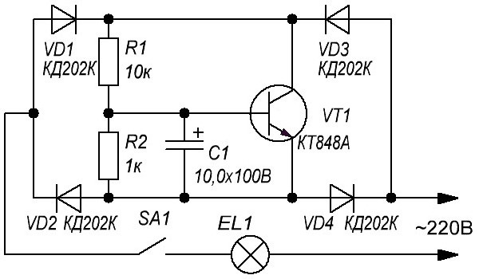

Защита электроосветительных приборов
Сопротивление нити лампы накаливания в холодном состоянии значительно меньше, чем в нагретом. Поэтому лампы накаливания чаще всего выходят из строя в момент включения. При «мягком» подключении лампы ток через нить увеличивается плавно, не достигая экстремального значения, поэтому долговечность лампы возрастает. Однако реализация подобных устройств сопряжена с рядом затруднений.
- Требуется применение оксидных конденсаторов большой емкости, которые в целях безопасности должны быть рассчитаны на напряжение не менее 400 В. Это приводит к существенному увеличению габаритов устройства.
- Тот факт, что выключатель встроен в само устройство, заставляет прокладывать дополнительные подводящие провода. Во многих случаях это усложняет конструкцию, так как пользоваться имеющимся выключателем готового осветительного прибора. (например, торшера или люстры с кнопкой, смонтированной на шнуре питания) оказывается, как правило, невозможно.
Обойти перечисленные трудности позволяет устройство, схема которого приведена на рис. 1. Оно выполнено в виде двуполюсника. Это позволяет разместить плату с его деталями в любом удобном месте, включив в разрыв провода, соединяющего выключатель SA1 (пригоден имеющийся в осветительном приборе) с лампой HL1 (или группой параллельно включенных ламп). Устройство допускает совмещение с настенным выключателем — может быть «спрятано» внутри люстры.

Рис. 1 - Схема устройства защиты электроосветительных приборов
Таблица 1
| Обозначение | Тип | Номинал | Количество | Примечание |
|---|---|---|---|---|
| C1 | Конденсатор | 10 мкФ / 100 В | 1 | |
| EL1 | Лампа накаливания | 220 В | 1 | |
| R1 | Резистор постоянный | 10 кОм / 0,5 Вт | 1 | |
| R2 | Резистор постоянный | 1 кОм / 0,5 Вт | 1 | |
| VD1-VD4 | Диод выпрямительный | КД202Ж | 4 | КД202К, КД202М, КД202Р |
| VT1 | Транзистор биполярный | КТ848А | 1 |
Применение транзистора КТ848А, обладающего большим статическим коэффициентом передачи тока и значительной мощностью, дало возможность обойтись конденсатором С1 сравнительно небольшой емкости. Данный транзистор относится к числу так называемых «составных», поэтому может работать при сравнительно небольшом базовом токе, что и дало возможность использовать резистор R1 довольно большого сопротивления и соответственно уменьшить емкость конденсатора С1. Это позволило сократить габариты устройства.
При указанных на схеме типах и номиналах деталей длительность задержки включения лампы HL1 равна примерно 100 мс, а выключения — 5 мс. Это гарантирует необходимую постепенность прогрева нити лампы при любом возможном характере коммутации тока выключателем SA1. Установленная временная задержка включения лампы совершенно незаметна, зрительно зажигание лампы будет происходить по-прежнему практически мгновенно.
При мощности лампы до 100 Вт транзистор VT1 можно монтировать без теплоотвода. При ее большем значении (максимальная допустимая мощность 300 Вт) потребуется небольшой теплоотвод. В ряде случаев конструктивно удобнее использовать диодные матрицы серии КЦ, подходящие по напряжению и току.
Источники
irls.narod.ru - Защита электроосветительных приборов
РАДИО № 12-90г., с.53